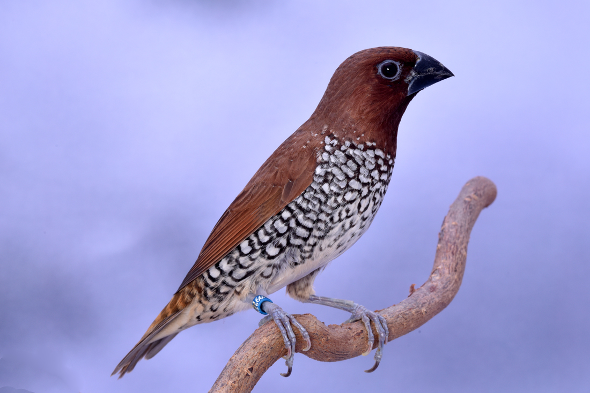

Les sexes sont identiques. La tête entière, la face et la nuque sont rougeâtre foncé ou châtain brun. Le
manteau, le dos et les scapulaires sont plus brun avec des discrètes stries chamois pâle. Le croupion est
brun-chamois clair barré et moucheté de brun sombre. Les couvertures sus-alaires présentent une belle teinte
jaunâtre ou jaune-paille. La queue, courte et cunéiforme, possède des rectrices centrales pointues. La base est
masquée par les longues couvertures sus-alaires mais la partie terminale visible est brun sombre au centre et
jaunâtre ou brun doré au niveau des rectrices externes. Les moyennes et les grandes couvertures alaires, de même
que les scapulaires, l'aloula et les primaires affichent une coloration brun-châtain sombre.
Taille : 12cm
Poids : 12 à 15g
Ordre : Passériformes
Famille : Estrildidés
Genre : Lonchura
Espèce : punctulata
Son cri de contact est un 'tay' nasal très aigu. Il produit également un pépiement très caractéristique des
capucins. Son chant est une série presque inaudible de cinq notes.